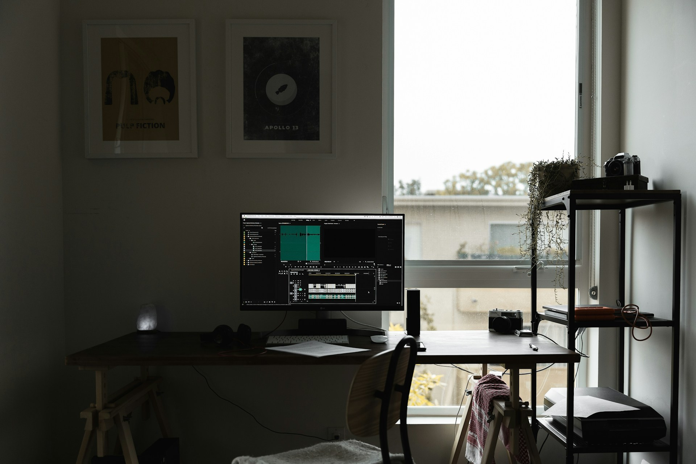

？？？🍐
高校卒業後に公務員として5年勤務していて、現在は機械系の技術会社員として勤務しております。
転職と副業に挑戦するためにHTML,CSS,Javascriptを勉強しています。
趣味はバイクツーリングと旅行、アウトドア系で休日はバイクツーリングすることが多いです。

高校卒業後に公務員として5年勤務していて、現在は機械系の技術会社員として勤務しております。
転職と副業に挑戦するためにHTML,CSS,Javascriptを勉強しています。
趣味はバイクツーリングと旅行、アウトドア系で休日はバイクツーリングすることが多いです。